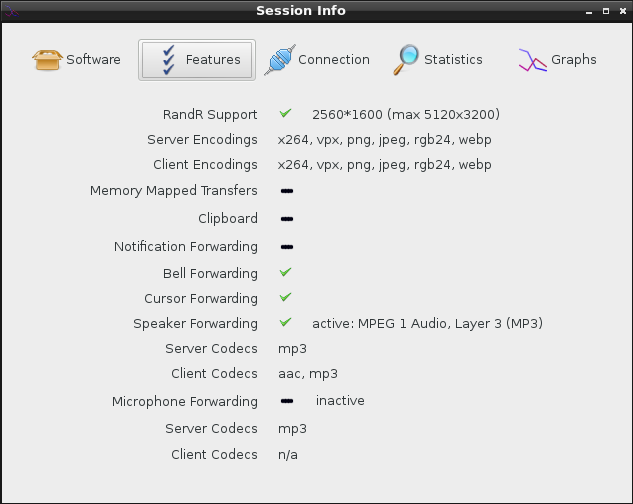
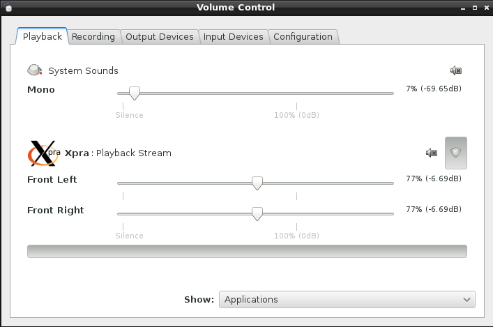
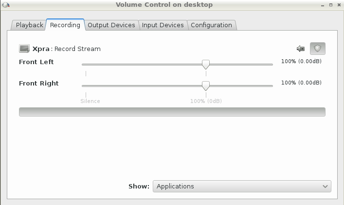

Unless you disable audio forwarding, you can start and stop it from the system tray at any time.
The client and server will negotiate which codec to use. The most widely tested and supported codecs are opus, vorbis, flac and mp3.
Unlike screen updates which are sent as discrete events, audio compression processes the operating system's audio stream and so this is a continuous process which will take up a little bit of CPU and bandwidth.
If you want to turn off speaker forwarding, use the option
speaker=off in your system-wide xpra.conf (to
disable it globally) or in the per-user configuration file, or on the
command line
Audio information displayed on session info (with speaker enabled
and running and microphone disabled):

A Linux client's pavucontrol showing the Xpra application
connected to the local pulseaudio server:

pavucontrol running within the xpra session ("on the server"),
showing xpra recording the session's audio:

For low level implementation details, see audio subsystem.
The main controls can be specified in the configuration file or on the command line, and they are documented in the manual:
speaker=on|off|disabled /
microphone=on|off|disabled: audio input and output
forwarding control: on will start the forwarding as soon as the
connection is established, off will require the user to enable
it via the menu, disabled will prevent it from being used and the menu
entry will be disabledspeaker-codec=CODEC /
microphone-codec=CODEC: Specify the codec(s) to use for
audio output (speaker) or input (microphone). This parameter can be
specified multiple times and the order in which the codecs are specified
defines the preferred cod ec order. Use the special value
help to get a list of options. When unspecified, all the
available codecs are allowed and the first one is used.audio-source=PLUGIN[:OPTIONS]: Specifies the GStreamer
audio plugin used for capturing the audio stream. This affects "speaker
forwarding" on the server, and "microphone" forwarding on the client. To
get a list of options use the special value h elp. It is also
possible to specify plugin options using the form
"--audio-source=SOURCE:name1=value1,name2=value2,etc", ie:
"--audio-source=pulse:device=device.alsa_input.pci-0000_00_14.2.analog-stereo"Other options are only available through environment variables for fine-tuning - which should rarely be needed:
XPRA_PULSEAUDIO_DEVICE_NAME to use a specific device if
there is more than one device to choose from (can happen when using an
existing pulseaudio server with more than one output device
attached)XPRA_SOUND_QUEUE_TIME can be used to control the
default amount of buffering by the receiverXPRA_SOUND_GRACE_PERIOD (defaults to 2000,
in milliseconds) errors will be ignored during this grace period after
starting audio forwarding, to allow the audio forwarding buffer to
settle downXPRA_SOUND_SINK: the default sink to use (normally
auto-detected)